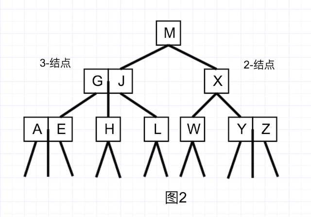

作为常用的数据结构之一，二叉查找树具有非常好的查找、插入时间复杂度。但是，在最优情况下和最坏情况下，二叉查找树的性能差异非常的大，因此我们需要一种更优化的方式实现二叉树，红黑树闪亮登场。
本文目录
一、二叉查找树（BST）Wiki
作为常用的数据结构之一，二叉查找树具有非常好的查找、插入时间复杂度。二叉查找树的基本规则是：
- 非空情况下，左结点及其子结点均小于父结点，右结点及其子结点均大于父结点
- 任意一个结点的左子结点和右子结点均是二叉查找树
- 没有两个值相等的结点
二叉查找树B中查找值x的查找逻辑为：
- 若B是空树，则搜索失败，否则：
- 若x等于根结点的值，则返回根结点；
- 若x小于根结点的值，则在左子树中搜索
- 否则，在右子树中搜索。
这是个递归调用的过程(循环也可以实现)
二叉查找树的实现非常的简洁，但是，在最坏情况下，BST的查询时间复杂度为O(n)，即从父结点开始，所有结点均只有左子结点或者右子结点(如图1)，因此，对二叉查找树进行适当的补充修改，让它能够自动平衡树的高度，就可以实现最坏情况下也有O(log n)的时间复杂度。
二、2-3查找树 Wiki
2-3查找树的性质
2-3查找树的特点是，一个结点可能具有两个子链接，也有可能具有三个子链接，取决于这个结点是2-结点还是3-结点。如图2所示。

可以看到，这里面所有的空链接到根结点的距离相等。在2-结点中，左结点均小于父结点，右结点均大于父结点，在3-结点中，左边值小于右边值，左结点小于左边值，右结点大于右边值，中间结点处于两值中间。
2-3查找树中的查找
在2-3查找树中的查找与普通的二叉查找树类似，在树T中查找值x，首先x与根结点的值比较，若等于则直接返回，若小于则在左结点中查找，若大于则在右结点中查找，如果是个3-结点，则比较与左右两个值的大小，小于左值，则左子树，大于右值则右子树，大于左值小于右值则在中间结点中寻找。
2-3查找树中的插入
在2-3查找树中的插入分成几种不同的情况：
1. 向2-结点插入新键
如果插入的结点是一个2-结点，那么将这个结点升级成为3-结点即可(如图3)。
2. 向一棵只含有3-结点的树中插入新键
3. 向一棵父结点为2-结点的3-结点中插入新键
这里的重点在于，插入了结点Z，之后，SX结点从3-结点变为4-结点，然后分裂成两个2-结点，将中间值X上浮到R，R所在2-结点编程3-结点，最后形成图5中的模式。
4. 向一棵父结点为3-结点的3-结点中插入新键
向父结点为3-结点的3-结点中插入新键与上一个类似，但是需要经过多次的结点升级->裂变，因此最后构成的2-3查找树，依然是上图中的形式。
5. 分解根结点
当根结点是一个4-结点的时候，根结点分裂成为三个2-结点，并且树的高度增加1。如图6所示。

小结
在2-3查找树的插入操作中，最重要的是向2-和3-结点中插入结点，在结点升级之后进行的分裂操作，以及向上浮动的操作。几乎所有的插入结点都可以认为是这些操作的组合。
另外，这些变换均属于局部变换，不影响整棵树的全局有序性和平衡性。任意一个空链接到根结点的深度都是一定的。
三、红黑树 Wiki
2-3查找树已经基本上实现了比较友好的查询时间复杂度和插入时间复杂度，重点在于如何在代码层面上实现2-3查找树。
红黑树就是一种非常简洁的实现方式。
红黑树的性质
红黑树的链接分成两种，红链接和黑链接，红链接对应着3-的子结点，黑链接对应着2-的子结点。如图7所示。
3-结点 AB，在红黑树中的画法为右上图所示，对于红黑树而言，黑链接的深度为1，红链接的深度为0，因此可以将红链接拉平，即右下图的画法。可以看到，红黑树的红链接就是将2-3查找树中的3-结点的两个相邻结点之间用红链接来连接，在其他性质上几乎完全相同，因此，实现红黑树的算法与2-3查找树类似，如插入结点时需要用到的旋转操作等。
后面的实现均使用Java语言。
需要注意的特征有:
- 红链接均为左链接
- 没有任何一个结点同时和两个红链接相连
- 红黑树是黑链接完美平衡的，即，任意空链接到根结点的路径上的黑链接数量相同。
size()方法代码如下:
public int size(){
return size(root);
}
private int size(Node x) {
if (x==null) {
return 0;
}
return x.N;
}
红黑树中的变换
1. 旋转
旋转有几种可能性，一是某结点的右链接(即右结点)为红色，我们需要将它旋转到左侧，二是将一个结点向右旋转。即，我们需要完成两个方法 rotateLeft()和rotateRight(),两个方法本身没有什么关联性，左旋转的代码和右旋转的代码只需要改变其中的right 和left即可。
代码如下:
// 左旋转
Node rotateLeft(Node h){
Node x = h.right;
h.right = x.left;
x.left = h;
x.color = h.color;
x.N = h.N;
h.N = 1 + size(h.left) + size(h.right);
return x;
}
// 右旋转
Node rotateRight (Node h){
Node x = h.left;
h.left = x.right;
x.right = h;
x.color = h.color;
x.N = h.N;
h.N = 1 + size(h.left) + size(h.right);
return x;
}
2. 颜色变化
当一个结点同时连接两个红链接的时候，我们使用flipColors()方法来转换颜色。除了将子结点的颜色由红变黑外，还需要将父结点的颜色由黑变红。
void flipColor(Node h){
h.color = RED;
h.left.color = BLACK;
h.right.color = BLACK;
}
另外，我们需要保证，根结点永远是黑色结点，因此在根结点为红色的时候需要进行上浮，并且树的高度增加一。
红黑树中的插入
我们使用RED 和 BLACK 两个bool变量来标志结点的颜色，以此为链接的颜色。使用私有方法isRed()来测试一个结点和父结点之间的颜色。可以获得以下代码(在RedBlackBST类中):
private static final boolean RED = true;
private static final boolean BLACK = false;
private class Node {
Key key;
Value val;
Node left, right;
int N;
boolean color;
Node(Key key, Value val, int N, boolean color){
this.key = key;
this.val = val;
this.N = N;
this.color = color;
}
}
private boolean isRed(Node x){
if (x==null) {
return false;
}
return x.color == RED;
}
和2-3查找树一样，插入分为几种可能，即向2-和3-结点插入的不同。
向单个的2-结点插入新键
一棵只有一个键的红黑树只有一个2-结点，因此，插入了一个键之后，我们需要旋转来平衡这棵树。
- 如果新键小于旧键，则在左侧新增一个红色结点即可，新的红黑树与单个的3-结点等价。
- 如果新键大于旧键，则在右侧新增一个红色结点，然后右旋转来保证满足我们对红黑树的约束，即使用
root = rotateRight(root)，来将其旋转为左红链接并且修正根结点的链接，这样才算完整的完成了插入操作。 - 如果新键等于旧键，则更新旧键的值。
不管是如何插入，除了更新结点外，另外两个操作最后都生成了一棵和单个的3-结点等价的红黑树，其中有两个键，左连接为红链接，树的黑链接高度为1。
向一棵双键树(即一个3-结点)中插入新键
同样的，这种情况分为3种子情况，即新键的值与两个旧键的比较。小于两者，两者中间，大于两者。
- 新键大于两个旧键，插入到右结点，此时这棵树是平衡的，根结点是中间大小的键，此时会产生一个具有两个红链接的父结点，此时我们将两个红结点通过颜色变换成黑色，即得到一棵由三个结点组成的高度为2的平衡树，正好能对应一棵2-3树。
- 新键小于两个旧键，新键会被建立为左结点，同样的产生了两个连续的红链接，此时只需要将上层的红链接通过右旋转即可得到第一种情况。
- 新键处于两者中间。同样的会产生两个连续的红链接，一个红色链接接一条红色右链接。将下层的红链接左旋转，即可得到第二种情况。
如下图(图8)所示。
插入算法的实现
public void put(Key key, Value val){
root = put(root, key, val);
root.color = BLACK;
}
private Node put(Node h, Key key, Value val){
if (h==null) {
return new Node(key, val,1,RED);
}
int cmp = Key.compareTo(h.key);
if (cmp < 0) {
h.left = put(h.left, key, val);
}else if (cmp > 0) {
h.right = put(h.right, key, val);
}else {
h.val = val;
}
if (isRed(h.right) && !isRed(h.left)) {
h = rotateLeft(h);
}else if (isRed(h.left) && isRed(h.left.left)) {
h = rotateRight(h);
}else (isRed(h.left) && isRed(h.right)) {
flipColor(h);
}
h.N = size(h.left) + size(h.right) + 1;
return h;
}
红黑树中的查找
红黑树中的查找与一般的二叉查找树的查找方法完全相同。
get()方法代码如下:
public Value get(Key key) {
return get(root, key);
}
private Value get(Node x, Key key) {
if(x == null) return null;
int cmp = Key.compareTo(x.key);
if(cmp < 0) return get(x.left, key);
else if(cmp = 0) return get(x.right, key);
else return x.val;
}
红黑树中的删除
红黑树中的删除操作也是比较的复杂，直接上代码。
private Node moveRedLeft(Node h) {
// h is RED, h.left & h.left.left is BLACK
// turn h.left or one child of h.left RED
flipColor(h);
if (isRed(h.right.left)) {
h.right = rotateRight(h.right);
h.rotateLeft(h);
}
}
public void deleteMin() {
if (!isRed(root.left) && !isRed(root.right)) {
root.color = RED;
}
root = deleteMin(root);
if(!isEmpty()) {
root.color = BLACK;
}
}
private Node deleteMin(Node h) {
if (h.left == null) {
return null;
}
if (!isRed(h.left) && !isRed(h.left.left)) {
h = moveRedLeft(h);
}
h.left = deleteMin(h.left);
return balance(h);
}
private void balance(){
if (isRed(h.right)) {
h = rotateLeft(h);
}
if (isRed(h.right) && !isRed(h.left)) {
h = rotateLeft(h);
}else if (isRed(h.left) && isRed(h.left.left)) {
h = rotateRight(h);
}else (isRed(h.left) && isRed(h.right)) {
flipColor(h);
}
}
private Node moveRedRight(Node h) {
// h is RED, h.right and h.right.left is BLACK
// turn h.right or one child of h.right RED
flipColor(h);
if (!isRed(h.left.left)) {
h= rotateRight(h);
}
return h;
}
public void deleteMax() {
if(!isRed(root.left) && !isRed(root.right)) {
root.color = RED;
}
root = deleteMax(root);
if(!isEmpty()) {
root.color = BLACK;
}
}
private Node deleteMax(Node h) {
if (isRed(h.left)) {
h = rotateRight(h);
}
if (h.right == null) {
return null;
}
if (!isRed(h.right) && !isRed(h.right.left)) {
h = moveRedRight(h);
}
h.right = deleteMax(h.right);
return balance(h);
}
public void delete(Key key) {
if(!isRed(root.left) && !isRed(root.right)) {
root.color = RED;
}
root = delete(root.key);
if(isEmpty(root)) root.color = BLACK;
}
private void delete(Node h, Key key) {
if(key.compareTo(h.key) < 0) {
if( !isRed(h.left) && !isRed(h.left.left) ) {
h = moveRedLeft(h);
}
h.left = delete(h.left, key);
} else {
if (isRed(h.left)) {
h = rotateRight(h);
}
if (key.compareTo(h.key) == 0 && h.right == null) {
return null;
}
if (!isRed(h.right) && !isRed(h.right.left)) {
h= moveRedRight(h);
}
if (key.compareTo(h.key) == 0) {
h.val = get(h.right, min(h.right).key)
h.key = min(h.right).key;
h.right = deleteMin(h.right);
} else {
h.right = delete(h.right, key);
}
}
return balance(h);
}
红黑树评价
红黑树是一棵几乎完美平衡的树，无论键的插入顺序如何，总能得到稳定的结果，在时间复杂度上也达到了非常高的效率，而在空间复杂度上，仅在二叉查找树的每个结点上增加了一个标注颜色的布尔变量，没有增加非常多的消耗，在查找上与二叉查找树最优情况完全相同(O(log n)), 在插入操作上增加了一些旋转操作等。
并且，红黑树本质上还是一棵二叉查找树，因此二叉查找树中用到的rank(), floor(), ceiling()等方法可以不经过任何修改就可以直接使用。
总结
首先，从简洁性上看，二叉树明显是最简单的实现方式，对于查找在最优情况下也可以实现O(log n)的复杂度，然而比较严重的问题是，如果构建这棵树时选择的根结点不是很合理，那么整棵树有可能发生严重的倾斜(最坏情况下为O(n))，如图1。因此，在二叉查找树的基础上，产生了2-3查找树。
2-3查找树最重要的特征是，在3-结点上插入而生成的4-结点会进行分裂，保证了2-3树的平衡性。
在此基础上实现了红黑树，在保持了二叉树的结构的情况下，大幅度优化了插入算法，虽然在实现上稍微复杂了一些，但能保证插入之后的树始终是一棵黑色平衡的树，因此也保证了二叉树的查询复杂度始终为O(log n)，并且不影响其它的操作。